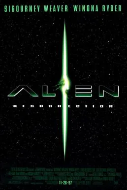

The genetics
Cloning and genetic hybridisation are at the centre of the film. Ripley 8 is the product of human cloning in which human and alien DNA have become intermixed, and the hybridisation runs both ways: she gains alien traits, while the queen develops a womb and produces a human-like newborn. The scientists, led by Dr. Wren and Dr. Gediman, work for the military and treat both the aliens and the abducted human hosts as material for research, and most of them are killed by what they create. The scene in which Ripley finds the failed clones, kept as specimens, is the film's strongest comment on the human cost of the experiment. Its science is loose: inheritance of memories through "genetic memory" has no basis, since memories are not stored in DNA, and DNA from different species cannot blend in a single body in this way. The film appeared shortly after the birth of Dolly the sheep in 1996, the first mammal cloned from an adult cell and the only lamb to survive to adulthood out of 277 attempts.
How genetics is portrayed
- Overall portrayal of genetics
- negative Military cloning is shown as unethical and catastrophic, its human cost epitomised by the lab of deformed failed clones that Ripley burns after one begs to die; the ending is uneasy ('I'm a stranger here myself').
- Outcome of the genetic intervention
- negative The cloning produces grotesque failed clones, an alien outbreak that kills most of the crew, and a human-alien hybrid Newborn; the Auriga must be crashed to stop the creatures reaching Earth.
- United Systems Military scientists (Dr. Mason Wren, Dr. Jonathan Gediman, General Perez)
- villain Aim: military, curiosity (negative). They clone Ripley eight times to extract the alien queen, keep the failed clones as specimens, and breed Xenomorphs in abducted humans for study and potential weapons; the film stages them as cruel and reckless (Wren betrays the survivors), and nearly all are killed by their own creations.
The story
Two hundred years after Ellen Ripley's death, military scientists aboard the spaceship USM Auriga clone her from blood samples. Because her DNA had become mixed with that of the alien queen she carried, the eighth clone, Ripley 8, carries an alien queen embryo, which the scientists remove and raise to breed Xenomorphs, using humans abducted by a crew of mercenaries as hosts. Ripley 8 has enhanced strength, acidic blood, some of Ripley's memories and a psychic link to the creatures. When the aliens escape and kill most of the crew, Ripley 8 joins the mercenaries, including the android Call, to reach their ship and destroy the Auriga before it reaches Earth. On the way she finds the deformed results of the seven failed cloning attempts, and burns the laboratory after one begs to be killed. The queen, contaminated by Ripley's genes, gives birth to a human-like hybrid that sees Ripley as its mother; she kills it, and the survivors escape as the Auriga crashes into Earth.